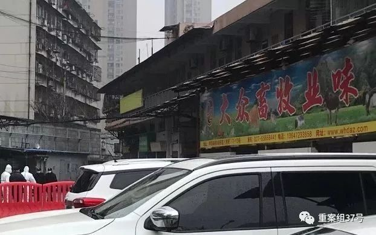
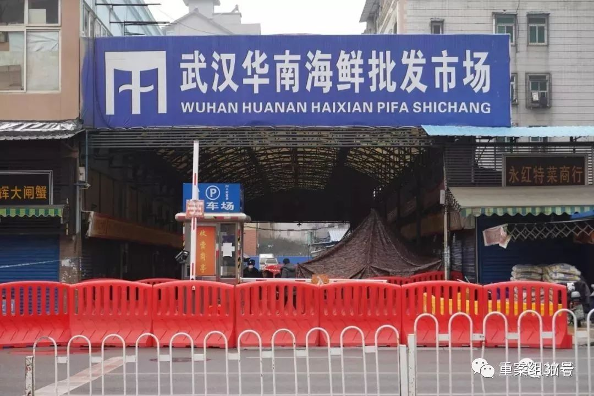
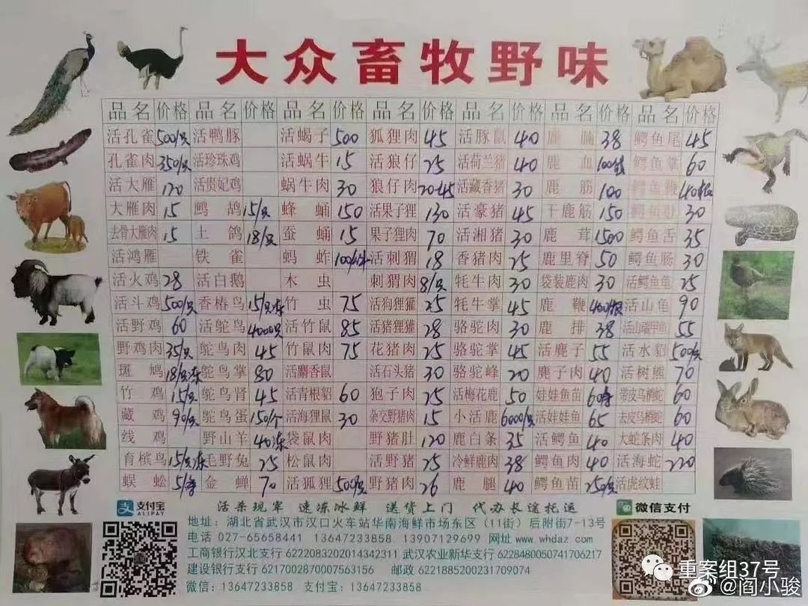
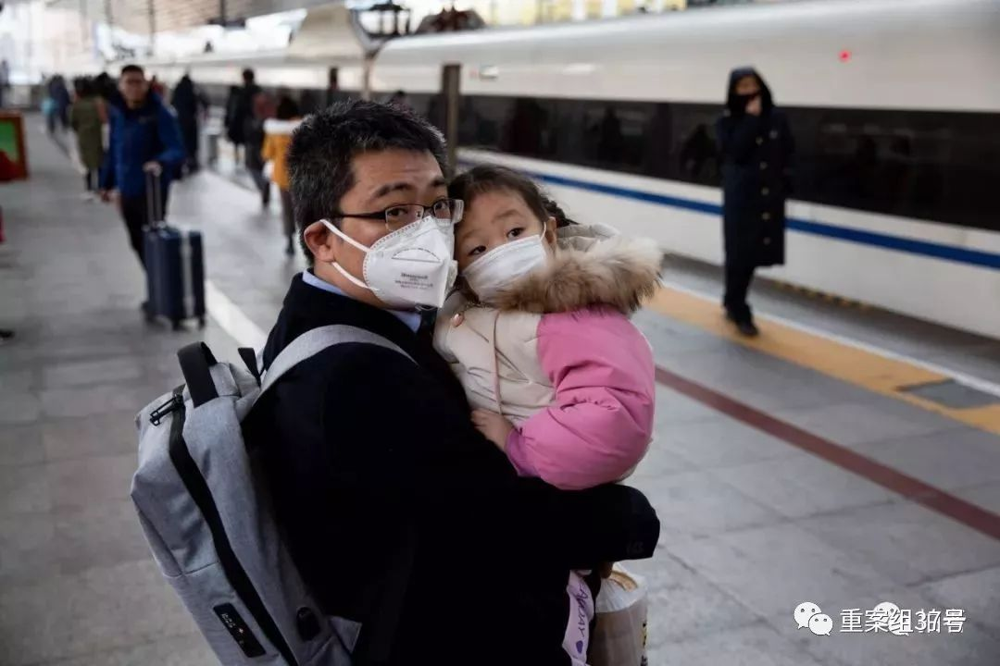
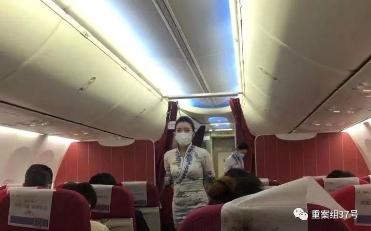

***
*** ***
***直击肺炎疫情下的武汉、北京、香港
原文链接 备份链接 ********** *************协和医院发热门诊门口，排队患者人数较多，约为50多人，已经从门诊楼内排到了楼外的人行道上，一旁的输液室则有20多人排队。一位未佩戴口罩的患者进入楼内，立刻有医护人员向其发 …
***** *****
*****
*****网传“大众畜牧野味”的确存在，该商铺位于华南海鲜批发市场东区北侧，招牌名为“大众畜牧业味”。受市场整体休业影响，商铺已闭店。新京报记者多次拨打商铺电话，均无人接听。*****

▲1月21日，武汉华南海鲜市场，网传图片所涉店铺已闭店。新京报记者 许雯 摄
文｜新京报记者 游天燚 海阳 王洪春 王飞翔 王煜 许雯 罗晓静 吴娇颖 谢莲
见习记者 吴淋姝 钱雅卓 实习生 孙朝
编辑｜ 张畅 程磊 白馗 陈思
►本文约4638字，阅读全文约需8分钟
新型冠状病毒肺炎疫情仍在蔓延。
据国家卫建委消息，截至1月20日24时，累计报告新型冠状病毒感染的肺炎确诊病例291例，其中湖北省270例，北京市5例，广东省14例，上海市2例，四川、云南等14省累计报告疑似病例54例。
武汉市市长周先旺在接受总台央视记者专访时表示，截至2020年1月20日24时，新型冠状病毒感染肺炎死亡病例增至6例。
为遏制新型冠状病毒感染引起的肺炎疫情扩散，武汉市防控措施持续升级，已采取措施包括对进出武汉人员加强管控、成立疫情防控指挥部、延期举行2020春节文化旅游惠民活动等。
今日16时许，新京报记者探访位于武汉市江汉区的华南海鲜批发市场，发现现场依然处于管控状态，近百名华南海鲜批发市场内的商户聚集在现场，排队领取政府补贴。
网传“大众畜牧野味”的确存在，该商铺位于华南海鲜批发市场东区北侧，招牌名为“大众畜牧业味”。受市场整体休业影响，商铺已闭店。新京报记者多次拨打商铺电话，均无人接听。
聚焦武汉
********************* *********************
*********************
华南海鲜市场继续休市，商户排队领政府补贴
1月21日下午，武汉市宣布，继续加大华南海鲜批发市场休市后管控力度，24小时管控市场及其周边出入口。加大农（集）贸市场及各类经营场所排查，开展卫生学调查和流行病学调查，对发现病例集中隔离治疗，对密切接触者进行医学观察。
新京报记者实地探访发现，自1月1日休业起，华南海鲜市场仍旧处于关闭状态，东区和西区全部商户关门停业，周边商户生意也受到影响。有曾在市场经营的商户表示，为维持老客户货源，目前已转移至其他批发市场进行配货。
新京报记者从现场多名民警处得知，自武汉市卫健委发布通报称此次疫情与华南海鲜批发市场有关后，多部门对此市场进行管控，除相关工作人员外，禁止他人入内。目前疫情呈上升态势，为减少市场内商户的经济损失，当地政府在市场外的办公室楼下设置补贴点。

▲ 1月21日下午16时许，已被关停的武汉华南海鲜批发市场外景。摄影/新京报记者 游天燚
现场一名引导商户排队的民警称，“现在无法确定传染源，不知道从哪儿传出来的，所以市场内商户的所有东西都不能往外送。政府对商户进行经济补贴，每户1万元左右。”
新京报记者在现场发现，在警方及现场安保人员的协调下，近百名商户拿着资料排队前往临时补贴点，登记个人信息。为防止疫情扩散，民警24小时值班，对华南海鲜批发市场周边商户进行防疫工作。
目前，华南海鲜批发市场西侧的商户大门紧闭，停止营业，并拉起了警戒线。现场有身穿防护服的卫生部门工作人员，对销售生鲜产品的商户进行消毒等防疫工作。

▲1月21日16时许，武汉华南海鲜批发市场西侧五十米，防疫工作人员对一生鲜商户进行检查。摄影/新京报记者 游天燚
“大众畜牧野味”所涉摊位已闭店
近日，一张武汉华南海鲜市场商铺“大众畜牧野味”的推销图片广为流传。
根据网传图片，“大众畜牧”售卖的野味种类多达42种，包括竹鼠、狗狸獾、猪狸獾、果子狸、狐狸、树熊、孔雀、大雁等，均可活杀现宰，速冻冰鲜，送货上门。

▲网传“大众畜牧野味”价目表。
市场一名女商铺老板告诉记者，自己此前曾前往“大众畜牧”店中，店里以售卖羊肉等常见肉类为主。另有一名男商铺老板说，市场休业前“大众畜牧”一直正常营业，据他了解，这家店确实售卖野味。
公开信息显示，华南市场有合法售卖野生动物的摊位。根据武汉市市场监督管理局2019年9月25日发布的消息，当天上午，市区两级市场监管部门联合市林业、森林公安等部门开展野生动物市场专项整治行动，在华南海鲜批发市场内，市区两级执法人员对售卖虎斑蛙、蛇、刺猬等动物的近8家商户进行地毯式排查，逐一检查其野生动物经营许可审批文件、营业许可证，严禁其经营未获审批的野生动物。
华南市场一家商铺的李姓老板告诉记者，市场售卖野生动物的摊位集中在西区中部一条长廊，“偷着卖那多少是有的。”
中国野生动物保护协会工作人员表示，如果偷着卖野生动物，渠道来源就存疑，有可能存在非法猎捕等违法违规行为。有些商家可能存在没有办理相关经营利用许可证和养殖许可证的违规行为，售卖野生动物是否经过正规的检疫系统检测，是否有相关卫生检疫部门的许可，也无法得知。
国家卫健委高级别专家组成员、中国疾病预防控制中心主任高福昨日表示，目前推断新型冠状病毒病毒的来源在华南海鲜市场，有野生动物在里面起了很关键的作用。国家卫健委高级别专家组组长钟南山院士在与央视连线直播时同样指出，病毒源头是哪种动物尚不清楚。从流行病学调查看，病毒来自于野生动物，可能性比较大的是竹鼠、獾等。

▲ 1月21日，武汉火车站进站闸机处，立有红外测温仪，据工作人员介绍，这个仪器全站共分布有16个。摄影/新京报记者 游天燚
火车站配备测温仪重点监测发热旅客
1月20日晚间22时，距离华南海鲜市场不足1公里的汉口火车站仍然人流密集。新京报记者在现场看到，汉口火车站地面南进站口至少安装有4台红外线测温仪，以检测离汉旅客体温。工作人员称，火车站进出站口都会对旅客进行体温检测，旅客体温超过38摄氏度将接受进一步检测，必要时将通知医院。
新京报记者在武汉高铁站同样看到安装有红外线测温仪，检测进出站旅客体温。

▲1月21日，武汉火车站，工作人员拿着体温检测仪检测经过进站闸机的体温。摄影/新京报记者 游天燚
据了解，自1月14日开始，武汉市在机场、火车站、长途汽车站、客运码头迅速安装红外线测温仪35台，配备手持红外线测温仪300余台，并在陆续加大配备力度。
▲ 1月21日，武汉火车站，工作人员通过仪器对旅客体温进行检测。摄影/新京报记者 游天燚
汉口火车站周边口罩销量剧增
1月20日，新京报记者探访汉口火车站周边多家超市获悉，一次性口罩短时间内销量剧增，购买者多为抵达武汉的外地旅客。
一家超市老板向记者展示了店内售卖的普通一次性口罩和棉质口罩，“一次性口罩 8块钱10个，今天一天就卖了200多块钱。”他表示，这两天新闻报道有很多确诊病例，来买口罩的人多了不少。
另一位超市老板告诉记者，一次性口罩一天就卖了100多个，购买者也有当地住户，“汉口火车站距离华南海鲜市场很近，我们也怕会传染。”在位于火车站进站口旁的一家小卖部窗口，记者购买到一袋一次性医用口罩，“进了十几包今天都卖完了，现在都进不到货了。”老板说。

▲ 1月21日，站台上的旅客。摄影/新京报记者 李凯祥
但在汉口火车站附近，外出佩戴口罩的武汉市民并不多。一位就读于武汉文华学院的女大学生告诉记者，她刚从长沙参加完一个活动返回武汉，但并未携带口罩。“之前学校辅导员有提醒我们尽量不要去人多的地方，出门要戴口罩，但大家感觉没那么严重，出门也不是每次都戴口罩。”
1月20日晚间，国家卫健委高级别专家组组长、中国工程院院士钟南山表示，此次新型冠状病毒感染的肺炎存在人传人的现象。记者了解到，某生产商内部已明确，其所生产的医用防护口罩优先供应给武汉，多地经销商已经把口罩库存调往武汉。

▲佩戴口罩的海航乘务员。 海南航空供图
海航、重航：空乘人员执飞武汉航线可佩戴口罩
******************************************
据中国民航局官网消息，1月21日，民航局下发通知，要求各运输航空公司在做好新型冠状病毒感染的肺炎疫情防控工作的同时，高度重视旅客服务工作，针对已经购买涉及武汉航班机票的旅客，如有退票要求，航空公司应当予以免费办理。
民航系统各单位将全力做好民航领域的疫情防控工作，保障“春运”期间航空运输工作有序开展，降低民航旅客和从业人员染疫风险，最大限度避免疫情通过航空器传播。
新京报记者今日从海南航空、重庆航空工作人员处获悉，受新型冠状病毒影响，即日起，执飞武汉航线的乘务员可在飞行全程中佩戴口罩。
重庆航空多名乘务员介绍，公司值班领导于上午发布通知称，即日起，执飞武汉的乘务员可在飞行全程中佩戴口罩。
重航乘务员沈悦（化名）向新京报记者表示，作为空乘人员，飞行的时候无法避免高频、高密度近距离接触旅客，机舱又是相对密闭空间，如果客舱内有携带病毒的旅客，空乘人员便属于易感人群。

▲乘务长示范如何正确佩戴口罩。 海南航空供图
此外，今日18时许，新京报记者从海南航空获悉，目前，海航已制定关于新型冠状病毒肺炎的防控应对方案。
海航一名工作人员告诉新京报记者，近期，正值春运旅客出行高峰，人员往返频繁，又恰逢冬春季呼吸道传染病高发季节。即日起，针对飞经武汉的航班，所有机组人员须统一佩戴口罩，飞行过程中若有旅客出现咳嗽、发热等疑似症状，乘务员将主动提供口罩并要求旅客佩戴。

▲航医示范如何正确佩戴口罩。 海南航空供图
专家：“超级传播者很可能已经出现”
******************************************
今日零时许，世卫组织发言人Tarik Jasarevic就新型冠状病毒(2019-nCoV)感染的肺炎疫情向新京报记者表示，根据世卫组织收到的最新信息及其分析，目前有证据表明存在有限人传人的情况，“这与其他呼吸系统疾病，特别是其他冠状病毒的爆发经验一致。”但其同时强调，目前尚无明确的证据表明持续人传人。“我们目前还没有足够的信息来了解人传人的程度，这也是世卫组织正密切监测的问题之一。”
今日13时许，新京报记者收到了世卫组织方面更新的声明，称目前可以从最新信息中确认，至少存在一些人传人的情况，医务人员的感染也证明了这一点。此外，最新报告的感染信息表明，现在可能存在持续人传人。“但我们仍需对流行病学数据进行更多分析，以全面了解人与人之间的传播。”
当地时间1月20日，世界卫生组织在推特发文称，该组织总干事谭德塞将于1月22日在日内瓦召开紧急委员会会议，并根据《国际卫生条例》规定对新型冠状病毒（2019-nCoV）造成的情况作出判断。
世卫组织总干事谭德塞表示，将在22日的会议上评估新型冠状病毒感染的肺炎疫情是否达到“国际关注的突发卫生事件”级别，并就如何控制疫情提出建议。
1月20日，长期研究病毒性新发性传染病的香港大学公共卫生学院副教授朱华晨接受新京报记者采访时介绍，通常来说，如果出现家庭聚集性病例、医院内感染，或者是社区性暴发，就要高度怀疑是人传人的可能性了。
朱华晨表示，根据目前公布的信息，可以确定武汉新型冠状病毒可以人传人，“比如珠海病人中的女儿，但还没有看到连续几代地传，也没有明显呈级数增长的传播链条。”
同时，围绕一个感染者病例，有14名医务人员感染，这也是明确的人传人证据。“这个案例，可以说是超级传播者很可能已经出现了。”朱华晨解释，如果一个人直接感染了很多人（如10人以上），这个人可以被定义为超级传播者，俗称“毒王”。但目前还不能完全排除医护间互传。
朱华晨表示，接下来还要看能不能“持续传”。也就是说，“要看看这些二代感染者，会不会再去感染其他人。也要看，这些被感染的医务人员，是直接从同一病人那里感染的，还是医护间也有互相传染。”如果出现超级传播者，或者出现大规模的爆发，并且已经突破了医疗机构的接待能力，那么这种防控就会变得非常非常艰难。
*洋葱话题*
*▼*
*你观察到身边有多少人做了基本防护？*
*后台回复关键词*****“洋葱君” ，加入读者群****
***推荐阅读***

**直击肺炎疫情下的武汉、北京、香港
**

*********既然在看，就点一下吧****** *********
*********
原文链接 备份链接 ********** *************协和医院发热门诊门口，排队患者人数较多，约为50多人，已经从门诊楼内排到了楼外的人行道上，一旁的输液室则有20多人排队。一位未佩戴口罩的患者进入楼内，立刻有医护人员向其发 …
原文链接 备份链接 [* 陈益刊 ](/author/85.html) 一位海鲜市场经营甲鱼的辛先生告诉记者，也是从新闻上知道市场出现肺炎病人，所以也有些担心，戴了口罩。一直在正常营业，没有关停过。 武汉华南海鲜市场 …
原文链接 备份链接 第一财经 2019-12-31 13:39:50 听新闻 [* 一财区域 ](/author/100000392.html) 华南海鲜市场是武汉最大的海鲜批发市场。据多方接受采访的人士称，该市场昨晚进行了例行消 …
原文链接 备份链接 21.01.2020本文字数：3771，阅读时长大约6.5分钟 导读：“武汉肺炎是否人传人”这个问题，一直受外界关注。在官方没有明确确认之前，公众的自我防护也由此减弱，直到北京、上海、深圳出现新发病例，公众才开始真正 …
原文链接 备份链接 截至20日晚上20点，境内累计确诊新型冠状病毒感染肺炎病例218例，疑似病例7例，死亡4例，治愈出院25例。 武汉共有15名医务人员确诊为新型冠状病毒感染的肺炎病例，另有1名为疑似病例。 国家卫健委高级别专家组组 …